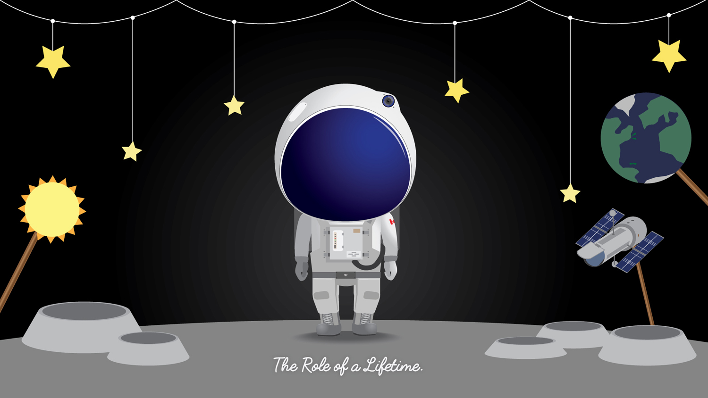
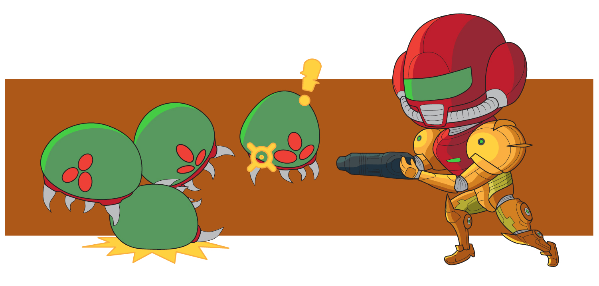
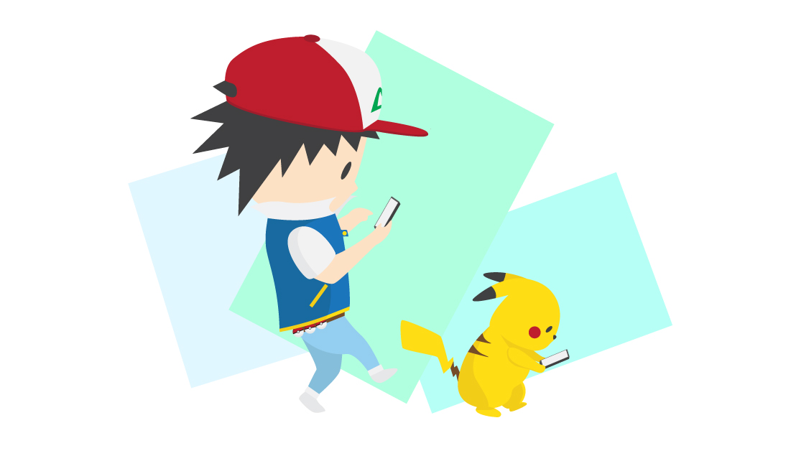
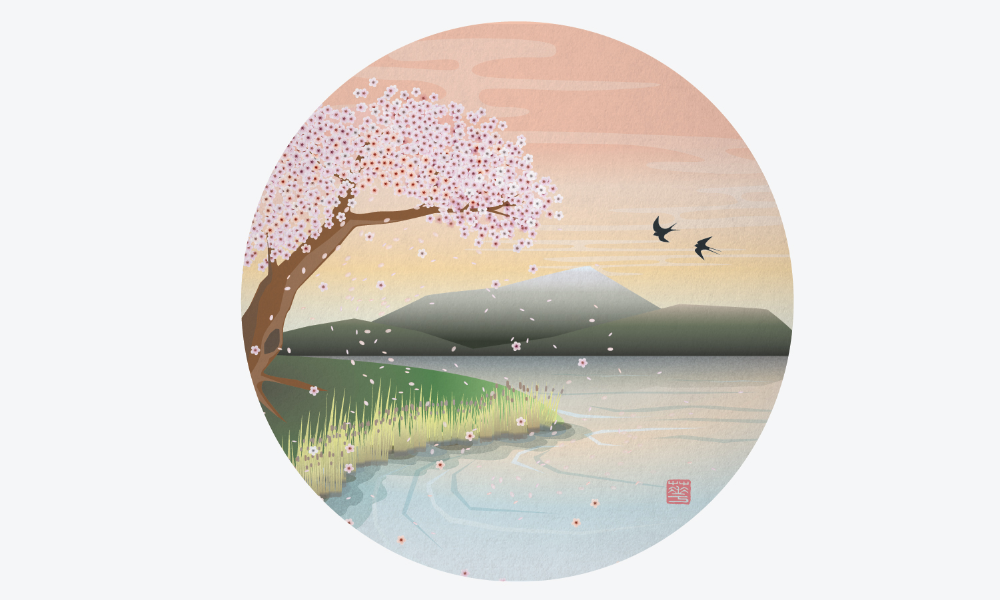

Illustrations and Visual Designs
A collection of illustrations, visual designs, and all things random.

This was an illustration I did when I still dreamt of being an Astronaut. I'm a sucker for space but I always wondered what I'd do/feel if the opportunity came to me on a silver platter. Much like being on stage for the first time, I think I'd be in awe of the sight in front of me.

This was an illustration I did for a Nintendo T-Shirt Contest they held between July - August 2016. I've always done realistic drawings, but never really got into the Anime Chibi styles [Large heads that go with smaller bodies that are supposedly cute]. A fun little project and style that I hope to continue exploring.

Another Nintendo submission, but this time poking at the Pokémon Go craze [As of 2016, this moblie game is all the hype]. Felt that it would be ironic for Ash Ketchum to take a break from being "the very best" and play some Pokémon Go with his beloved Pikachu.

I do Chinese Calligraphy and Painting during my free time, but I always wondered how the art style would transfer over digitally. Here I tried to explore the traditional 山水 [shān shui] or "Mountain Water" painting style with flat colours and gradients while layering them on top of each other. A combination of geometric shapes and layering of transparencies resulted into something...interesting.